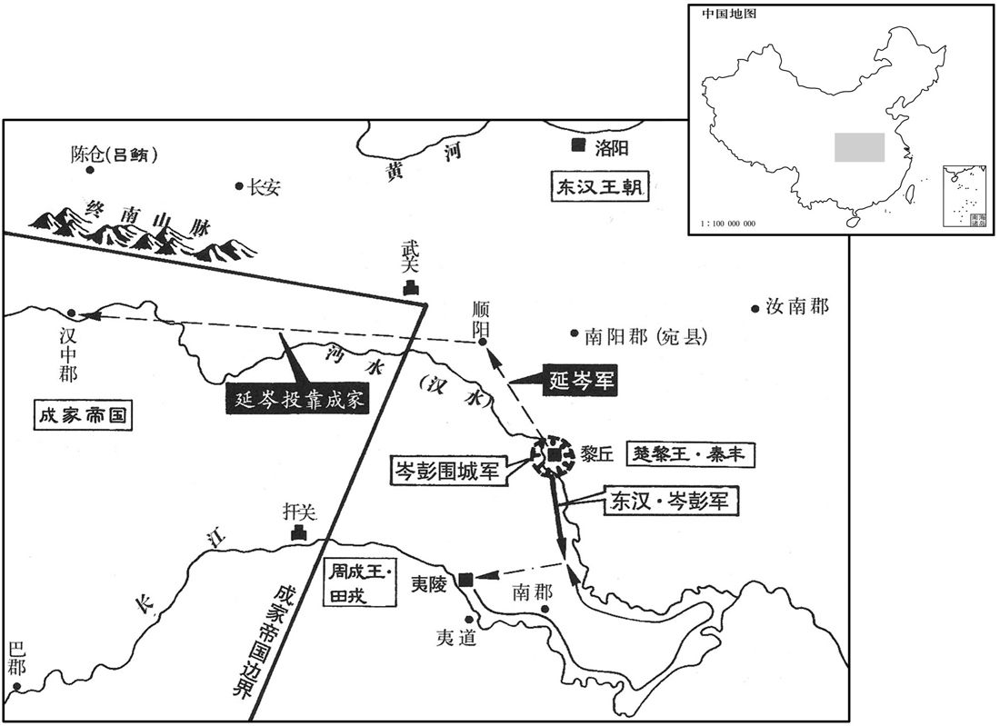
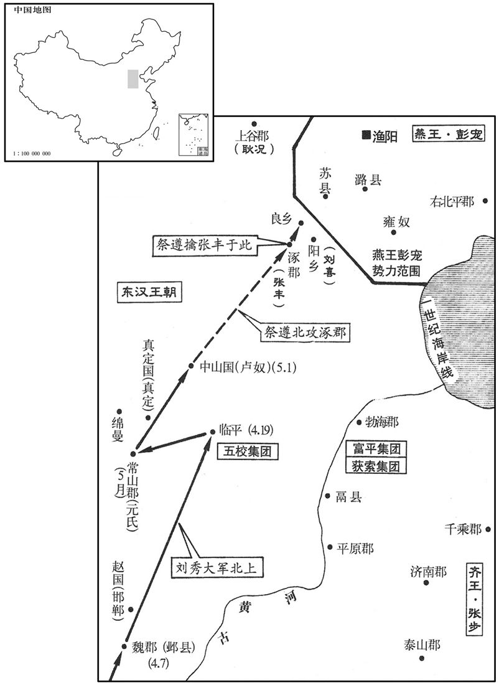
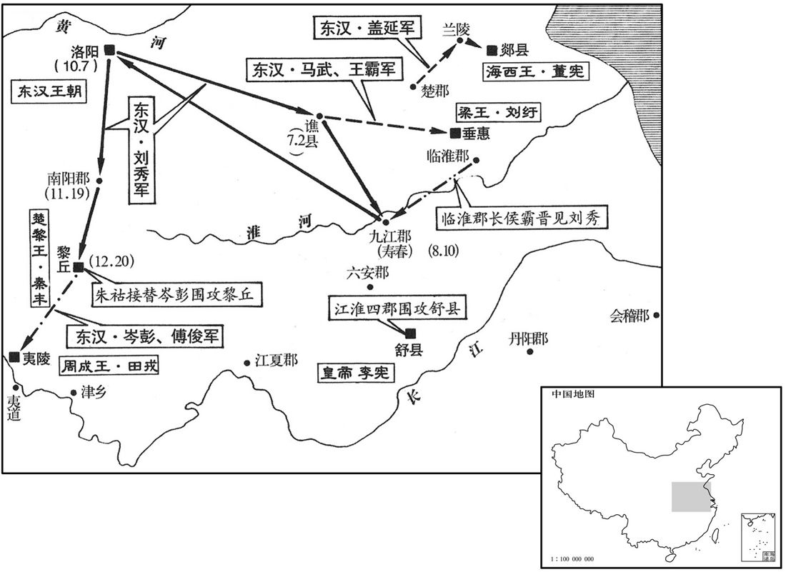

公元28年资治通鉴：本年记事、原文与白话对照
按原书编年位置阅读；追叙和史论不等于本年发生的事件。白话采用所据译本，缺译不以生成译文补齐。
卷41 · 本年记事
公元28年 · 汉世祖光武皇帝建武四年
四年〔（戊子、二八）〕
本年事件索引（现代整理）

本年形势与背景参考图

本年形势与背景参考图

本年形势与背景参考图
正月，甲申，大赦。
正月甲申（初二），刘秀实行大赦。
二月，壬子，上行幸怀；壬申，还雒阳。
二月壬子（初一），刘秀前往怀县。壬申（十一日），返回洛阳。
延岑复寇顺阳；〔郡国志，顺阳县属南阳郡。顺水东南入蔡。括地志：顺阳故城，在邓州穰县西三十里，楚之郇邑也。复，扶又翻；下同。〕遣邓禹将兵击破之。岑奔汉中；公孙述以岑为大司马，封汝宁王。
延岑又攻打顺阳。刘秀派邓禹率领军队击败延岑。延岑逃往汉中。公孙述任命延岑当大司马，封为汝宁王。
田戎闻秦丰破，恐惧，欲降。〔降，户江翻；下同。〕其妻兄辛臣图彭宠、张步、董宪、公孙述等所得郡国以示戎曰：「雒阳地如掌耳，〔如掌，喻其狭也。〕不如且按甲以观其变。」戎曰：「以秦王之强，犹为征南所围，吾降决矣！」〔岑彭时为征南大将军，故戎云然。〕乃留辛臣使守夷陵，自将兵沿江泝沔上黎丘。〔自夷陵沿江而下，至沔口；自沔口泝沔而上，可至黎丘也。上，时掌翻。〕辛臣于后盗戎珍宝，从间道先降于岑彭，〔间，古苋翻。〕而以书招戎曰：「宜以时降，无拘前计！」戎疑臣卖己，灼龟卜，降兆中坼，〔周礼菙氏：凡卜，以明火爇燋，吹其焌，契以授卜师。郑玄曰：燋焌，用荆菙之类。兆者，灼龟，发于火，其形可占者。菙，时髓翻。燋，哉约翻。焌，音俊，又子寸翻。〕遂复反，与秦丰合；岑彭击破之，戎亡归夷陵。
田戎听说秦丰被打败，感到恐慌，准备投降。田戎妻子的哥哥辛臣画出彭宠、张步、董宪、公孙述等占有的郡国给田戎看，对他说：“洛阳这块地方，不过像手掌那么大罢了，我们不如暂且按兵不动，以观察局势的变化。”田戎说：“凭着秦丰的强盛，还陷于征南大将军岑彭的包围之中，我决心投降了！”于是留下辛臣，让他守卫夷陵，自己率领军队沿着长江至 沔江，逆流而上进军黎丘。辛臣在田戎出发后，盗取田戎的珍宝，抄小路逃跑，先向岑彭投降，然后写信招降田戎说：“你应该及时投降，不要拘泥于我们以前的打算！”田戎怀疑辛臣出卖自己，烧龟甲占卜应否投降。龟甲从中裂开，大凶。于是又进行反叛，同秦丰联合。岑彭打败田戎，田戎逃回夷陵。
夏，四月，丁巳，上行幸邺；己巳，幸临平，〔贤曰：县名，属巨鹿郡，故城在今定州鼓城县东南。〕遣吴汉、陈俊、王梁击破五校于临平。鬲县五姓共逐守长，据城而反；〔贤曰：鬲县属平原郡，故城在今德州西北。五姓，盖当土强宗豪右。鬲，音革。余谓守长者，守鬲县长，非正官也。长，知两翻；下同。〕诸将争欲攻之。吴汉曰：「使鬲反者，守长罪也。敢轻冒进兵者斩！」乃移檄告郡使收守长，而使人谢；城中五姓大喜，即相率降。诸将乃服，曰：「不战而下城，非众所及也！」
夏季，四月丁巳（初七），刘秀前往邺城。己巳（十九日），前往临平。派遣吴汉、陈俊、王梁在临平击败五校军。鬲县五大家族联合起兵，驱逐代理县长，占据县城反叛。将领们争先恐后地要前去攻打。吴汉说：“促使鬲县人反叛的，是代理县长的罪过。胆敢轻率进兵的，一律斩首！”于是用公文通告郡府拘捕代理县长，并派人酬谢。城中五大家族非常高兴，立刻相继投降。将领们于是佩服吴汉，说：“不经过战斗就能得到城池，这种本领不是一般人所能赶得上的！”
五月，上幸元氏；辛巳，幸卢奴，将亲征彭宠。伏湛谏曰：「今兖、豫、青、冀，中国之都，而寇贼从横，未及从化。〔从，子容翻。〕渔阳边外荒耗，〔边外者，边于外夷也。〕岂足先图！陛下舍近务远，弃易求难，〔易，以豉翻。〕诚臣之所惑也！」上乃还。
五月，刘秀前往元氏。辛巳（初一），抵达卢奴，准备亲自征讨彭宠。伏湛劝阻说：“现在，兖州、豫州、青州、冀州本是中国的内地，而盗匪贼寇横行无忌，还没有来得及使他们顺从，接受教化。渔阳不过是临近北方外族的荒凉地方，怎么值得先去图谋呢？陛下舍近求远，放弃容易做的事，去做难做的事，真使我感到迷惑！”刘秀这才返回。
帝遣建议〔【章：十二行本「议」作「义」；乙十一行本同；孔本同。】〕大将军朱祜、建威大将军耿弇、征虏将军祭遵、〔祭，侧界翻。〕骁骑将军刘喜讨张丰于涿郡。祭遵先至，急攻丰；禽之。初，丰好方术，有道士言丰当为天子，〔西都有方士，东都因称为道士。好，呼到翻。〕以五彩囊裹石系丰肘，云「石中有玉玺」。丰信之，遂反。既执，当斩，犹曰「肘石有玉玺」。傍人为椎破之，〔为，于伪翻；下同。〕丰乃知被诈，仰天叹曰：「当死无恨！」
刘秀派遣建议大将军朱祜、建威大将军耿、征虏将军祭遵、骁骑将军刘喜在涿群讨伐张丰。祭遵先行到达，猛烈攻打张丰，把他生擒。当初，张丰喜好法术，有个道士说张丰会做皇帝，并用五彩的口袋包裹石头绑在张丰的肘上，说：“石头中有皇帝用的玉玺。”张丰相信道士的话，于是叛变。把他捉住以后，应当斩首，他还说：“我肘上的石头里有玉玺。”旁人为他用槌子打破石头，张丰才知受骗了。他仰天长叹说：“我应当死，死而无恨！”
上诏耿弇进击彭宠。弇以父况与宠同功，〔况与宠同有助汉之功，事见上卷、三十九卷更始二年。〕又兄弟无在京师者，不敢独进，求诣雒阳。诏报曰：「将军举宗为国，功效尤着，何嫌何疑，而欲求征！」况闻之，更遣弇弟国入侍。时祭遵屯良乡，刘喜屯阳乡，〔贤曰：良乡、阳乡，皆县名，并属涿郡。阳乡故城，在今幽州故安县西北。宋白曰：良乡，在燕为中都，汉为良乡县。〕彭宠引匈奴兵欲击之，耿况使其子舒袭破匈奴兵，斩两王，宠乃退走。
刘秀颁下诏书，命令耿进攻彭宠。耿因为父亲耿况和彭宠有同样的功劳，再加上兄弟没有人在洛阳做人质，不敢单独进军，请求返回洛阳。刘秀下诏回答说：“将军全家为国效忠，功劳卓著，有什么嫌疑而要求征召回洛阳呢？”耿况听说以后，另外派耿的弟弟耿国前往洛阳，到宫廷服务。这时，祭遵驻屯良乡，刘喜驻屯阳乡，彭宠率领匈奴的军队准备袭击。耿况命他的儿子耿舒击败匈奴军，诛杀匈奴两位亲王，彭宠这才退兵。
秋，七月，丁亥，上幸谯，〔考异曰：袁纪，「六月幸谯」，今从范书。〕遣捕虏将军马武、骑都尉王霸围刘纡、周建于垂惠。
秋季，七月丁亥（初八），刘秀到谯城。派遣捕虏将军马武、骑都尉王霸在垂惠包围刘纡、周建。
董宪将贲休以兰陵降；〔贤曰：前书贲赫，音肥。今姓作贲，音奔。兰陵县，属东海郡；故城在今沂州丞县东。〕宪闻之，自郯围之。〔贤曰：郯县，属东海郡；故城在今泗州下邳县东北。郯，音谈。〕盖延及平狄将军山阳庞萌在楚，〔楚，彭城也。〕请往救之。帝敕曰：「可直往捣郯，〔贤曰：捣，击也。余谓捣，捣虚也；此兵法所谓攻其必救也。〕则兰陵自解。」延等以贲休城危，遂先赴之。宪逆战而阳败退，延等因拔围入城。明日，宪大出兵合围；延等惧，遽出突走，因往攻郯。帝让之曰：「间欲先赴郯者，以其不意故耳！今既奔走，贼计已立，围岂可解乎！」延等至郯，果不能克；而董宪遂拔兰陵，杀贲休。
董宪的将领贲休献出兰陵县投降。董宪得到消息，从郯县率军包围兰陵。盖延与平狄将军山阳人庞萌在楚驻屯，请求前往兰陵救援贲休。刘秀告诫说：“大军可以去直捣郯县，兰陵之围自然就会解除。”盖延等认为贲休所守的兰陵城危险，于是先奔赴兰陵救援。董宪迎战，然后假装战败撤退。盖延等因此攻破围军进城内。第二天，董宪率大军合围。盖延等恐惧，迅速突围逃跑，于是前往攻打郯县。刘秀责备盖延等人说：“先前要进攻郯县，是由于出其不意的缘故罢了！现在既然败逃，敌人的计谋已经确定，怎么还能解除兰陵之围呢！”盖延等到达郯县，果然不能攻克。而董宪终于攻陷兰陵，诛杀贲休。
王莽末，天下乱，临淮大尹河南侯霸独能保全其郡。〔郡国志：临淮郡在雒阳东千四百里。〕帝征霸会寿春，拜尚书令。时朝廷无故典，又少旧臣，〔少，诗沼翻。〕霸明习故事，收录遗文，条奏前世善政法度，施行之。
王莽末年，天下大乱，唯独临淮郡大尹河南人侯霸能够保全一郡平安。刘秀征召侯霸在寿春见面，任命他当尚书令。当时朝廷没有旧法则可依，又缺少旧臣，侯霸熟悉过去的典章制度，搜集失散的文献档案，列出前朝好的政策和法令制度上奏，予以施行。
冬，十月，甲寅，车驾还宫。
冬季，十月甲寅（初七），刘秀返回洛阳。
隗嚣使马援往观公孙述。援素与述同里闬，相善，〔援与述皆茂陵人。说文曰：闬，闾也，侯旰翻。〕以为既至，当握手欢如平生；而述盛陈陛卫以延援入，交拜礼毕，使出就馆。更为援制都布单衣﹑〔何承天纂文曰：都、致、错、履、无极，皆布名。方言曰：襌衣，江、淮、南楚之间谓之褋，关之东西谓之襌衣。为，于伪翻。〕交让冠，会百官于宗庙中，立旧交之位，述鸾旗、旄骑，〔鸾旗注见十三卷文帝元年。旄骑，旄头骑也。秦穆公伐南山大梓，有一青牛出走，入丰水中；其后牛出丰水中，使骑击之，不胜；有骑堕地复上，发解，牛畏之，入不出：故置旄头骑以前驱。〕警跸就车，磬折而入，〔贤曰：磬折，屈身如磬之曲折，敬也。孔颖达曰：磬折者，屈身如磬之折杀。按考工记云：磬氏为磬，倨句一矩有半。郑云：必先度一矩为句，一矩为股，而求其弦。既以一矩有半触其弦，则磬之倨句也。是磬之折杀，其形必曲，人之倚式亦当然也。〕礼飨官属甚盛，欲授援以封侯大将军位。宾客皆乐留，〔乐，音洛。〕援晓之曰：「天下雌雄未定，公孙不吐哺走迎国士，〔周公一饭三吐哺以下天下之士。〕与图成败，反修饰边幅，〔贤曰：言若布帛修整其边幅也。〕如偶人形，此子何足久稽天下士乎！」〔稽，留也。〕因辞归，谓嚣曰：「子阳，井底蛙耳，〔言志识褊狭，如坎井之蛙。〕而妄自尊大！不如专意东方。」〔东方，谓雒阳也。〕
隗嚣派马援前往成都观察公孙述的情况。马援和公孙述是同乡，关系很好，他以为到达之后，公孙述一定像平时那样和他握手言欢。但公孙述让许多卫士排列在殿阶下，戒备森严，然后请马援进入。行过交拜礼之后，公孙述让马援出去，到宾馆休息。又替马援制做布衣服和交让寇。在宗庙中召集百官，设立了旧交老友的座位。公孙述用绣着鸾鸟的旗帜、披头散发的骑士作前导，开路清道，实行警戒，登车出发。他向左向迎侯的官员屈身作答后，进入宗庙。礼仪祭品及百官的阵容十分盛大。公孙述准备封马援侯爵，任命当大将军。马援带领的宾客们都乐意留下来。马援向他们解释说：“天下胜负未定，公孙述不懂得吐出口中的饭，奔走迎接有才干的人，与他共同图谋成败的大事，他反而注重繁琐的小节，就像一个木偶人，这种人怎么能够长久留住天下有志之士呢？”因此告辞返回，对隗嚣说：“公孙述不过是井底之蛙罢了，却妄自尊大！我们不如一心与东方的刘秀往来。”
嚣乃使援奉书雒阳。援初到，良久，中黄门引入。〔中黄门，宦者也；属少府。〕帝在宣德殿南庑下，〔庑，音武，堂下周屋也。〕但帻，坐，迎笑，〔董巴曰：古者有冠无帻，其戴也加首有頍，所以安物。诗曰：有頍者弁，谓此也。秦加武将首饰为绛袙，其后稍稍作颜题。汉兴，续其颜，郄摞之，施巾连题，却覆之，今丧帻是其制也，名之曰帻。帻者，头首严赜也。至孝文，乃高颜题，续之为耳，崇其巾为屋，合后施收，贵贱皆服之。蔡邕曰：帻，古者卑贱执事不冠者之所服。元帝额有壮发，不欲使人见，始进帻服之。〕谓援曰：「卿遨游二帝间；今见卿，使人大凓。」援顿首辞谢，因曰：「当今之世，非但君择臣，臣亦择君矣！臣与公孙述同县，少相善；〔少，诗照翻。〕臣前至蜀，述陛戟而后进臣。〔陛戟，谓卫者持戟侠陛也。〕臣今远来，陛下何知非刺客奸人，而简易若是！」帝复笑曰：「卿非刺客，顾说客耳。」〔说，去声。〕援曰：「天下反复，盗名字者不可胜数；〔盗名字，谓僭窃位号，称帝称王也。易，以豉翻。复，扶又翻。说，输芮翻。胜，音升。〕今见陛下恢廓大度，同符高祖，乃知帝王自有真也。」
于是隗嚣派马援带着给刘秀的信到洛阳去。马援初到，等了很久，中黄门引进。刘秀在宣德殿南面的廊屋里，只戴着头巾，坐在那里，笑迎马援。刘秀对马援说：“您在两个皇帝之间游历，今天见到您，令人非常惭愧。”马援叩头辞谢，于是说：“当今的天下，不但君主选择臣子，臣子也选择君主。我和公孙述同是一县的人，自幼关系很好。我前些时候到成都，公孙述让武士持戟立在殿阶下，然后才接见我。我今天远道而来，您怎么知道我不是刺客或奸恶的人，而这样平易地接见我！”刘秀又笑着说：“您不是刺客，不过是说客罢了。”马援说：“天下大局，反复未定，盗用帝王称号的人不计其数。今天我看见您恢宏大度，和高祖一样，才知道自有真正的天子。”
公孙述聚兵数十万人，积粮汉中；又造十层楼船，多刻天下牧守印章。〔守，式又翻。〕遣将军李育、程乌〔【张：「乌」作「焉」，下同。】〕将数万众出屯陈仓，就吕鲔，将徇辅；冯异迎击，大破之，育、乌俱奔汉中。〔考异曰：公孙述传：「使李育、程乌与吕鲔徇三辅。三年，冯异击鲔、育于陈仓，大败之。」按本纪，「四年，冯与述将程焉战陈仓，破之。」冯异传亦在今年。盖述传误以「四年」为「三年」，「焉」作「乌」耳。〕异还，击破吕鲔，营保降者甚众。
公孙述聚集军队数十万人，在汉中囤积粮食。又建造十层高的楼船，大量刻制天下州郡长官的印章。公孙述派遣将军李育、程焉率领数万军队进军，在陈仓驻屯，去和吕鲔合兵，准备攻占三辅地区。冯异迎击，大败敌军。李育、程焉都逃往汉中。冯异返回，击败吕鲔，有大量营寨投降。
是时，隗嚣遣兵佐异有功，遣使上状，帝报以手书曰：「慕乐德义，思相结纳。〔乐，音洛。〕昔文王三分，犹服事殷，〔孔子曰：三分天下有其二，以服事殷，周之德可谓至德也已矣！〕但驽马、铅刀，不可强扶，〔贤曰：周礼：校人掌六马；驽马，最下者也。说文：铅，青金也，似锡而色青。言驽马、铅刀，不可强扶而用也。强，其两翻。〕数蒙伯乐一顾之价。〔战国策，苏代谓淳于髡曰：人有卖骏马者，比三旦立于市，市人莫之知；往见伯乐曰：臣有骏马，欲卖之，比三旦立市，市人莫与言，愿子还而视之，去而顾之。臣请献一朝之价。伯乐如其言，一旦而价十倍也。数，所角翻。乐，音洛。〕将军南拒公孙之兵，北御羌、胡之乱，〔御，读曰御。〕是以冯异西征，得以数千百人踯躅三辅。〔贤曰：踯躅，犹踟蹰也。毛晃曰：踯躅，跳也。踯，直炙翻。躅，直录翻。〕微将军之助，则咸阳已为他人禽矣！如令子阳到汉中，三辅愿因将军兵马，鼓旗相当。傥肯如言，即智士计功割地之秋也！〔贤曰：秋，一岁中功成之时，故举以为言。〕管仲曰：『生我者父母，成我者鲍子。』〔贤曰：事见史记。〕自今以后，手书相闻，勿用傍人间构之言。」〔间，古苋翻；下同。〕其后公孙述数遣将间出，嚣辄与冯异合势，共摧挫之。述遣使以大司空、扶安王印绶授嚣；〔扶安，谓相扶助而安也。〕嚣斩其使，出兵击之，以故蜀兵不复北出。〔复，扶又翻。〕
当时，隗嚣派遣军队协助冯异作战有功，派使者人给刘秀上书报告情况。刘秀亲笔写信回答说：“因为思慕道德仁义，盼望与将军结交。从前周文王占有天下的三分之二，仍向商朝称臣，但劣马和铅质的刀，不能勉强扶持，我却几次承蒙您这位伯乐看顾一眼的荣耀。您在南方抗拒公孙述的军队，在北方抵御羌、胡外族的骚扰。因此冯异西征，能够仅用数千人在三辅地区周旋。如果没有将军的帮助，咸阳就已被别人占领了。假如公孙述到汉中，三辅地区愿凭借将军的军队和他对抗，使双方力量旗鼓相当。如果您肯像我说的这样做，那就是给智士贤人计算功劳、分封土地的时候！管仲说过：‘生养我的是父母，使我成功的是鲍叔牙。’从今以后，我们之间用亲笔书信互通消息，不要听信别 人挑拨离间的话。”从那以后，公孙述几次派将领秘密出兵，隗嚣都同冯异联合起来，一齐将公孙述军挫败。公孙述派使者将大司空、扶安王的印信绶带授给隗嚣，隗嚣诛杀使者，派出军队攻击。因此公孙述的军队不再向北进攻。
泰山豪杰多与张步连兵。吴汉荐强弩大将军陈俊为泰山太守，击破步兵，遂定泰山。〔郡国志：泰山郡在雒阳东千四百里。〕
泰山郡的豪强大多和张步的军队联合。吴汉举荐强弩大将军陈俊做泰山太守，击败张步的军队，因而平定了泰山郡。
译本中未与胡注本可靠对应的内容
以下另列供核对版本差异，不并入胡注本正文。
译本所附古文
[8]六月，辛亥，车驾还宫。
译本白话
六月辛亥（初二），刘秀返回洛阳。
译本所附古文
[11]八月，戊午，上幸寿春，遣扬武将军南阳马成率诛虏将军南阳刘隆等三将军发会稽、丹阳、九江、六安四郡兵击李宪。九月，围宪于舒。
译本白话
八月戊午（初十），刘秀到寿春县。派遣扬武将军南阳人马成率领诛虏将军南阳人刘隆等三位将军，征调会稽、丹阳、九江、六安四个郡的兵力攻打李宪。九月，在舒县包围李宪。
译本所附古文
[13]太傅卓茂薨。
译本白话
太傅卓茂去世。
译本所附古文
[14]十一月，丙申，上行幸宛。岑彭攻秦丰三岁，斩首九万余级；丰余兵裁千人，食且尽。十二月，丙寅，帝幸黎丘，遣使招丰，丰不肯降；乃使朱祜等代岑彭围黎丘，使岑彭、傅俊南击田戎。
译本白话
十一月丙申（十九日），刘秀前往宛城。岑彭围攻秦丰三年，斩杀九万余人。秦丰剩余的军队才一千人，粮食将要耗尽。十二月丙寅（二十日），刘秀抵达黎丘，派使者招降秦丰，秦丰不肯投降。于是派遣朱祜等代替岑彭包围黎丘；派遣岑彭、傅俊率军南下，攻打田戎。